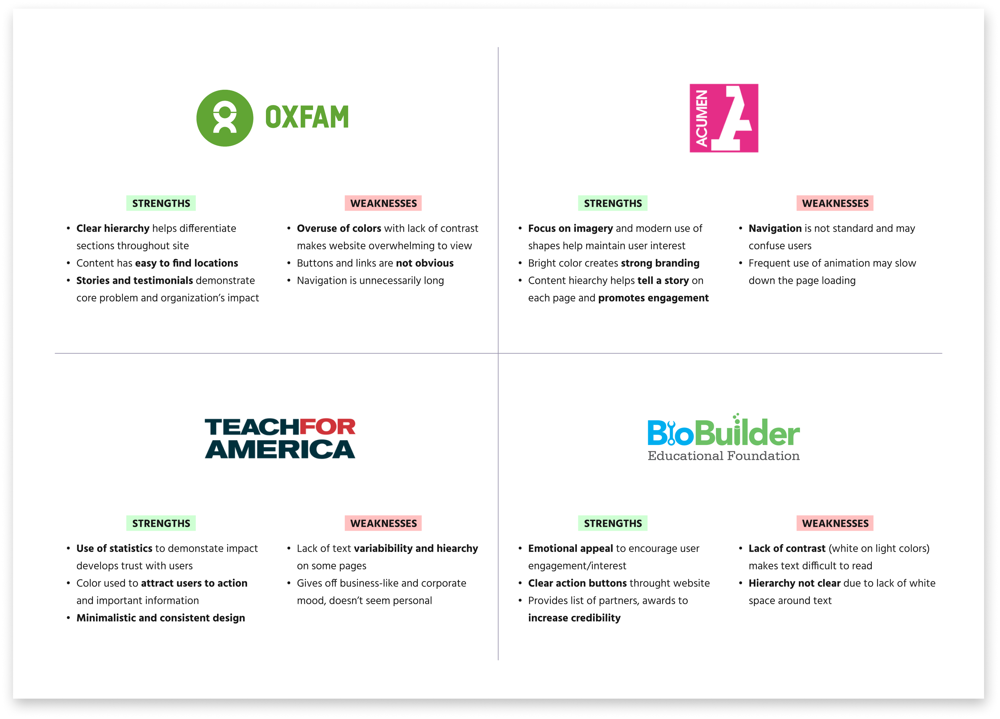
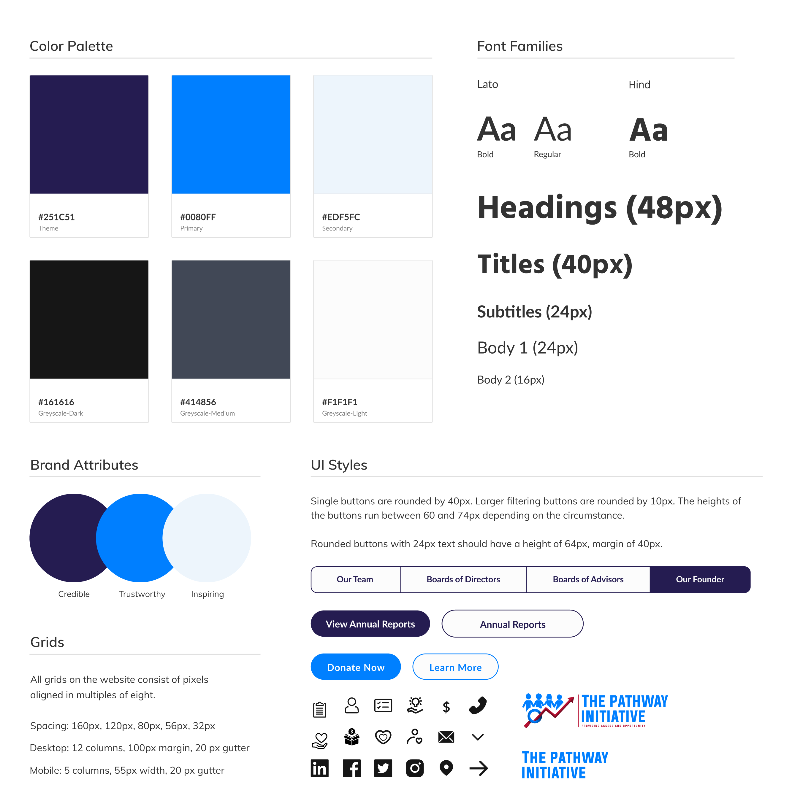

Project Overview

3 Months (February - April 2021)

5 Member Team | Role: UX Researcher, UI/UX Designer
My team and I were tasked with improving the usability, functionality, and visual design for the official website of The Pathway Initiative (TPI), a nonprofit that aims to bridge the gap between minority, disadvantaged groups and the medical field. Within ten weeks, we researched, ideated, prototyped, and developed a new responsive website to inspire visitor engagement and organizational growth.
Background
With hopes to amplify TPI’s cause and mission, the client previously worked with a team to develop an organizational website. They, however, left the cient with a poorly designed, fraudulent product and a pile of hefty fines. TPI’s values and credibility got lost in the website’s sizeable broken functionalities and distracting visual components.Unfortunately, the overall user experience did not give users a peace of mind that their engagement and donations would be used well, despite the client’s best intentions.
To create a website that will better establish TPI’s credibility, we removed all broken functionalities and replaced them with relevant content and delightful visuals that hone in on TPI’s vision as an organization. From conception to initial launch, our design and development team created a product that was not only easier to navigate but also easier to manage and scale. With hopes to increase visitor engagement, we delivered a website equipped to grow and evolve with TPI in the future.
Heuristics Analysis
We analyzed the original website based on Neilsen's 10 Usability Heuristics. These are the main usability errors we identified:
1. Consistency and Standards
- Inconsistent visual design and functionality between web and mobile (non-functional navigation)
- Headings on the page do not match their title in the navigation
2. Aesthetic and Minimalist Design
- Lack of text and visual hierarchy
- Excessive decorative elements: large, distracting images, bold fonts accompanied by little text or explanation, and loud colors with low contrast
- Images are decorating rather than informing the user
3. Flexibility and Efficiency of Use
- Besides the navigation bar, there is little to no other method for users to navigate the site
- There is a search function, but the lack of information provided in results makes the function almost unusable
4. Match Between Real World and System
- Textual information is quite wordy and is difficult to understand
- Phrases used may be unfamiliar with users and therefore doesn’t encourage action
Client Objectives and Needs
As a nonprofit in its early funding stages, The Pathway Initiative hopes to achieve the following organizational objectives:
- Increase public donations
- Increase corporate sponsorships
- Increase involvement: volunteering, jobs, partnerships
Competitive Analysis
Four non-profits websites were chosen to be analyzed as competitors. We selected these based on our client’s suggestions and how they matched our client’s website needs. We observed the strengths and weaknesses of these sites in order to apply or avoid features for our design.
Wireframes
We designed mobile and desktop wireframes for each potential page of the website.

User Testing
Five potential users were interviewed to user test and share their thoughts on the website’s initial wireframes. The objective of these interviews were to discover the needs and frustrations of users while navigating through the website for the first time.
- Ambiguous and Missing Content - Users wanted more context about the services offered and how to get involved. They were not convinced to further engage based on the current content available.
- Needed Clarification - Some navigation links were linguistically unfamiliar to users and misplacement of text led to users searching for answers elsewhere.
- Minimize Input - For the donate page specifically, users expressed desire to immediately input their information rather than have a process with several steps.
Style Guide
After experimenting with color and different UI inspiration, we created a design system to establish design organization and to help streamline the development process. We opted to use purple and blue to convey wisdom and reliability, positive characteristics that we wish to convey through the nonprofit website. The following design components were also specifically selected so as to minimize development costs.
Initial Prototype
With our style guide and insight from user testing, we made a high fidelity iteration to show our client the potential visual design of the website. These are the main five pages but we made a total of 12 at this phase of the design.

Critique and Evaluation
Pressed for time, we reached out to a UX Designer from Mastercard to critique and evaluate our designs. We focused on the homepage and donation pages for usability, visual understanding, and general design elements. These are the main takeaways for our next iteration:
Intentional use of color
- Use a main color for call to action buttons, interactive elements - grab user attention
- Keep colors representing race the same in statistical graphics - increase user understanding
- Ensure the contrast of colors meet the accessibility guidelines - standard usability
Content simplification and hierarchy
- Separate donation steps with sections - ease user task
- Arrange methods of donations from most desired to least - adjust user focus
Prototype Iterations
Based on feedback, we improved content hierarchy while being more intentional with our use of color. By being more purposeful in our choices, we are able to increase user understanding by highlighing the content of importance and guiding the actions of users.

Original Site Comparison
While comparisons between prototype versions were noteable, returning to the original site revealed drastic improvements to TPI's branding and transparency as a nonprofit organization.


Reflection
During this project, I had a wonderful experience working alongside a motivated team composed of a project manager (Wesley Cho), developers (Zach Mumbauer and Amalia Riegelhuth), and fellow designer (Vickie Zhang)!
As I prepared designs for developer use, I was reminded of the importance of component based designs and having a completed design system as guidance. Working with my first client taught me the need to identify the minimum viable product (MVP) as soon as possible - especially with a strict / short timeline. Although we were all eager to implement new features and provide as many page designs as requested, doing so led us to sacrifice time that could have been used to further improve the key pages of the website.
Future Considerations
With only 10 weeks to complete this project, we left the client with several additional designs and features that can be considered for future updates.
- Designing for diversity (program qualifications: create surveys to check user qualifications prior to applications)
- Adjusting color contrast on different types of screens (Development revealed secondary color (light blue) translated differently between retina and non-retina displays, further testing would help to maximize readability.)
- Page designs: Additional Resources, Volunteer, Donation Gift Matching